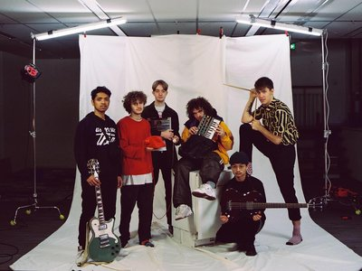
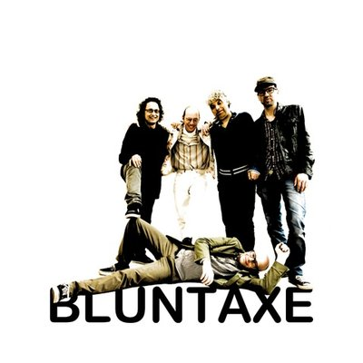

zaterdag
18:45-19:45
Elijah waters + The Freedom
Pas 21 jaar en nu heeft hij al 4 miljoen streams op zijn EP ‘’Burning Rivers’’. Elijah Waters (rapper, singer-songwriter en producer) is aanraking gekomen met muziek door het skateboarden en toen hij met zijn vrienden het collectief Green Cabin begon, ging het snel.
vrijdag
19:00-21:00
VUIST
Wanneer niemand het je geeft, moet je het zelf halen, toch? Je strijdt om je plek te bemachtigen en je stempel te drukken. Om te claimen wat van jou is, met jouw stem, jouw geluid. En ja, het is een lange weg. Het is een pad dat je bewandelt waarin pieken en dalen elkaar afwisselen als dag en nacht. Je komt van ver.

zaterdag
20:00-21:30